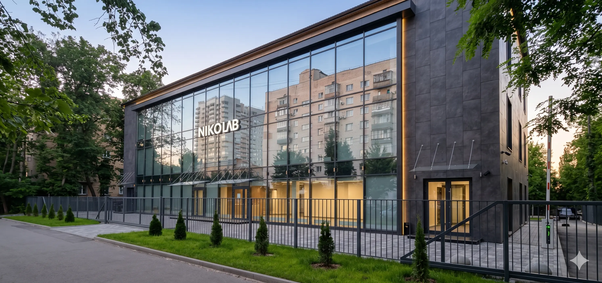
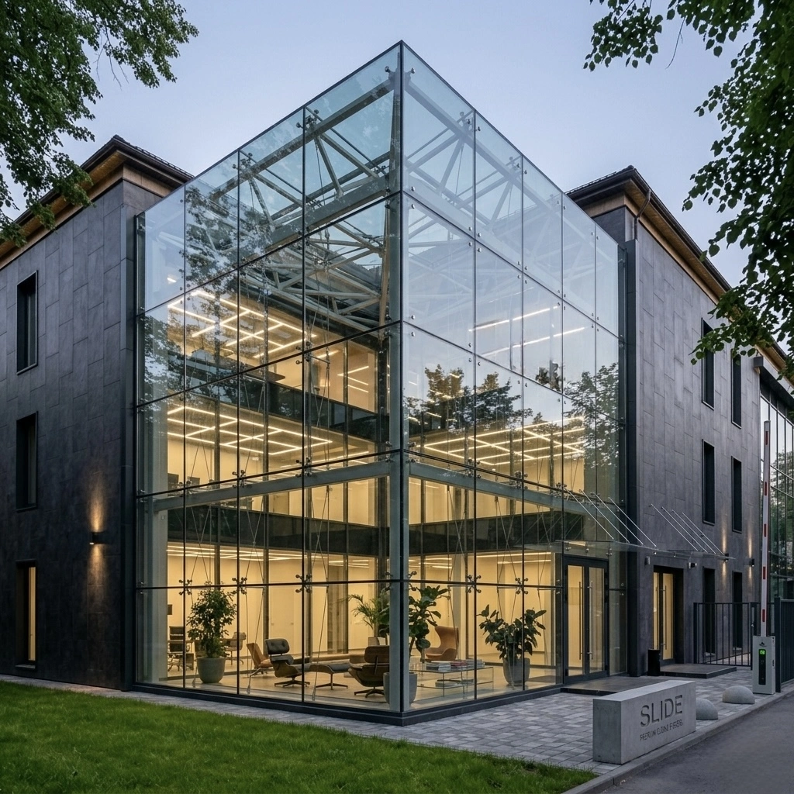

02 / FACADE-GLAZING
Фасадне скління
Світлопрозорі фасади, що перетворюють будівлю на архітектурне висловлювання — від бізнес-центрів до приватних резиденцій.
01 — Про систему
Фасад — це обличчя будівлі.
Світлопрозорий фасад — це інженерія оболонки будівлі. Баланс між прозорістю, енергоефективністю та статикою — за мінімуму видимих профілів і максимуму світла всередині.
Розрахунок вітрових навантажень, вузлів примикань і вибір профільної системи — усе під конкретний об'єкт.
Перевірені профілі
Інженерія оболонки
Повний цикл
02 — Анатомія фасаду
Розріз вузла стійки
Горизонтальний переріз стійко-ригельної системи: шість вузлів, які визначають тепло, герметичність та статику фасаду.
03 — Типи систем
Три типи фасадів
Від класичної стійко-ригельної до суцільної скляної площини на точкових кріпленнях — систему підбираємо під архітектуру та бюджет об'єкта.


Стійко-ригельна
Класична сітка з видимими профілями стійок і ригелів — універсальне, перевірене рішення для більшості об'єктів.
Структурна · напівструктурна
Скло на структурному герметику — зовні читається суцільна дзеркальна площина без видимих рам.
Спайдерна (точкова)
Скло на точкових кріпленнях-павуках — максимум прозорості й мінімум конструкції в полі зору.
04 — Характеристики
Дата-шит фасаду
Значення орієнтовні — точні параметри визначає статичний розрахунок під конкретний об'єкт.
05 — Реалізовано
Фасадні проєкти


06 — Питання
Про фасадне скління
07 — Заявка